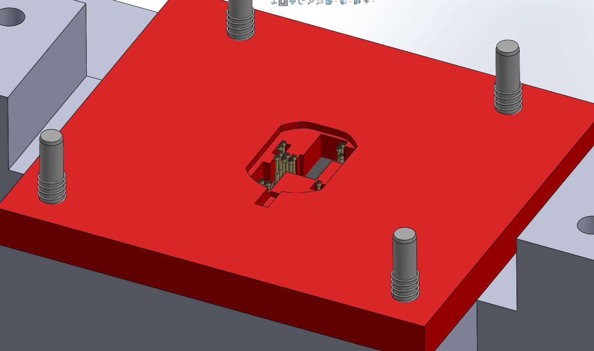

Mechanical Design • Manufacturing • Test Hardware
Compact PCB Test & Programming Fixture
Designed and built a custom fixture for reliably locating a very small PCB and contacting closely spaced test points during programming and electrical testing.

01
The Challenge
The fixture needed to hold a very small PCB in a repeatable position while making reliable electrical contact with a dense pattern of test points. Because the test points were closely spaced, small alignment errors at the board could translate into missed or inconsistent pogo-pin contact.
The fixture also needed to be practical to assemble, service, and hand off to the test group for programming and electrical verification.

02
Fixture Design
I designed the fixture in SolidWorks around the supplied PCB geometry and test-point locations. Purchased toggle clamps and standard hardware were used where possible, while the board interface and fixture body were custom designed.
The assembly combines a rigid base, spring-supported upper structure, removable plates, and a dedicated pogo-pin interface. This let the fixture provide repeatable mechanical location while still being straightforward to assemble and service.


03
Precision Delrin Insert
The critical pogo-pin region required tighter and more repeatable geometry than I wanted to rely on from the 3D-printed components alone. I therefore designed a separate Delrin insert for the contact pattern.
I programmed the insert in Fusion 360 and machined it on a CNC router. This combined the speed and flexibility of additive manufacturing for the bulk fixture with a machined component at the location where positional control mattered most.


04
Assembly & Wiring
After fabricating the mechanical components, I installed the pogo-pin hardware and soldered the wiring into the holders. The completed mechanical and electrical assembly was then prepared for use by the test group.


05
Outcome
The finished fixture combined FDM-printed structure, purchased hardware, and a precision machined Delrin interface into one complete test and programming fixture.
The project required mechanical design, tolerance awareness, component selection, additive manufacturing, CNC machining, soldering, and coordination with the downstream test team.